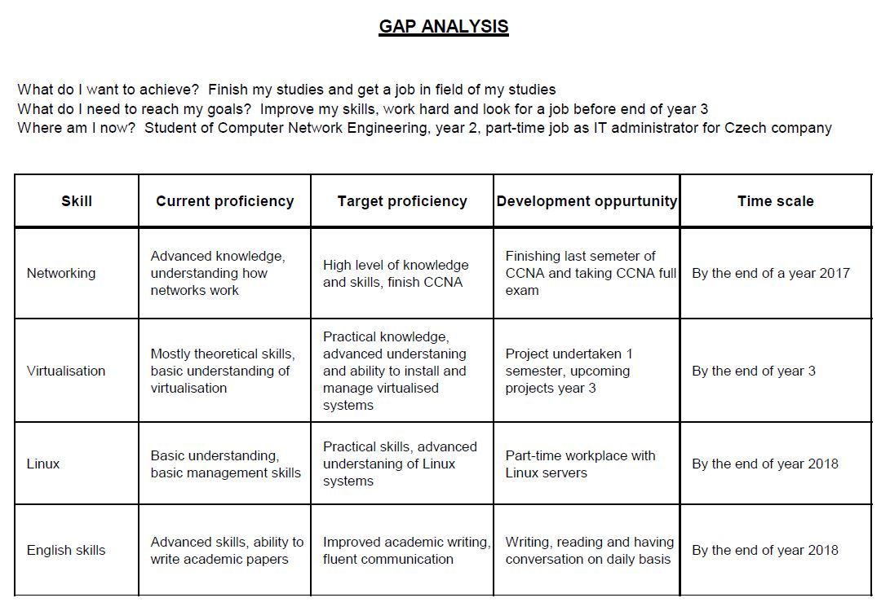

Personal development
This page critically describes outcomes of this project. First paragraph explains task overview, second paragraph shows successful outcomes of this research and third paragraph explains what I could have done better.
Critical evaulation
General Task overview
In this scenario we were required to undertake a research from our chosen subject regarding our area of study. This research was aimed to investigate benefits of virtualisation for small to mid-size businesses. Research was used by using survey and interview to gather information about small companies and their use of virtualisation. Data has been transferred into Excel sheet and are available in section Findings. When research was completed we were required to create a webpage with all the information. The webpage has been divided into five sections and each section provides different information and sixth page that provides all references.
Successful outcome
Research and collecting data was smooth process. Although I was able to convince only one small business for an interview, outcome of this interview was interesting and its result is available in section Findings. The most challenging part of this assignment was creating a new webpage. This was first time ever I have tried to create a webpage and for the first time when I used HTML and CSS style. After couple of failed attempts, I have found free template and I was finally able to see how HTML is correctly written. The template has been completely changed and CSS style adapted to this scenario. This adaptation has been made by try, fail and try again method until the design did not meet requirements for this scenario. In the end I am satisfied with the overall design of the website. It was huge experience and I have learnt a lot about web building, HTML code and SCC styles and how to correctly undertake a research.
Critical outcome
Only one downside to conducting this research was that I was unable to gather many respondents to the questioner. Because this research was aimed for small and mid-sized businesses, I have tried to reach this kind of businesses through email or phone, but in most cases we were unable to gather necessary information about their virtual infrastructure because of security reasons. However I have reached one company which provided me with enough information to continue this project. This project would require more time and larger scale of respondents to provide effective data how virtualisation benefits small to mid-sized businesses.
Another downside to this project was that this was first time ever when I have worked with HTML and CSS. This enabled me to learn a lot about it. However the lack of skill, knowledge and time kept me from creating a webpage that would offer fluent movement between pages, create interactive buttons with more functions than just menu buttons or redesign the webpage the way I wanted. Although this project was very difficult in many ways and very time consuming, I am satisfied with the final outcome. This project allowed me to improve my technical skills and gather so much information about interesting facts.
Personal Development Plan
As mentioned above, the main area where my skills need improvement are web building, writing HTML and using CSS styles. I have no experience with HTML code and CSS styles and therefore it will be a challenge to improve my skills to create efficient and appealing website. This website has to be finished by the end of second semester, 5/5/2017.
Second area where I would like to improve is conducting a research. I have experience with researching a question from year 1, however I do not feel confident enough that my skills are not as good as they should be. I will improve this skill by conducting another research for Project-based research. Because this project has to be finished by the end of second semester I believe I will improve this skill by this time.
Third area where I seek improvement is my academic writing skills. I am experienced with academic writing from previous 3 semesters however I believe there is plenty room for improvements. Main focus in this area would be creating an argument. Creating an argument is the most efficient way to write academic papers and therefore I will work hard to improve it. I would like to improve this area by the end of this academic year to be prepared for my dissertation.
Last area of improvements is my team working skills. I have work as part of a team before, but similarly to academic writing there is still plenty room for improvement. I like work in a team but I believe I work better when alone. I would like to improve this skill by the end of year 3, to be prepared for team work at workplace.
GAP Analysis
The GAP analysis helped me understand current state of my desired skills, what level of the skill I want to achieve. I was able to determine how to improve current level of the skill and how to breach the gap. Picture below shows my GAP analysis.

In order to get accepted for job while studying, or after I finish studies I have to improve these critical skills. First important skill is networking. This skill will allow me to search for Network administrators’ positions with confidence. Current state of the skill is advanced, however there is so much to learn. To prove that my networking skills are adequate I need to pass CCNA exam.
Another important skill is knowledge about virtual systems. At this moment, my skills are mostly theoretical and need huge improvements. I would like to do hands-on project or gather experience by working as administrator with virtual systems for a while.
As a part of my part-time administrator position is working with Linux OS systems. Unfortunately distance does not allow me to be in office and learn from my colleagues. I am self-tough learner and my skills need rapid improvements. Linux systems play very important role in current world of servers, networking and all IT systems. I believe this skill is necessary for every IT administrator.
Lastly I will work very hard on improving my English skills. At the moment my academic writing and general English skills are acceptable and there is no problem in communication in any way. However I would like to improve until I will be satisfied.